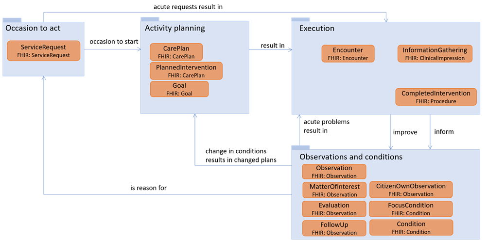

Implementation Guide for fælleskommunal informationsmodel
1.2.0 - CI Build
Implementation Guide for fælleskommunal informationsmodel
1.2.0 - CI Build
This page is part of the KLCore (v1.2.0: Release) based on FHIR R4. This is the current published version in its permanent home (it will always be available at this URL). For a full list of available versions, see the Directory of published versions 
| Official URL: http://fhir.kl.dk/core/ImplementationGuide/kl.dk.fhir.core | Version: 1.2.0 | |||
| Draft as of 2023-06-07 | Computable Name: KLCore | |||
This is the FKI FHIR implementation guide. FKI stands for “Fælleskommunal InformationsModel” in English “Common Municipality Information Model”. The FKI FHIR profiles can be used to exchange and report health care and social care data from Danish municipalities.
The health and care related data is a result of routine documentation in home care nursing, home care, health promotion and prevention and physical rehabilitation. The documentation practice follows FSIII.
Social care data results from routine documentation in adult social care. The documentation practice follows VUM and FFB
FKI is a core model, which means that it is the recommended way to encapsulate the above-mentioned data, but it does not in itself specify use cases. FKI has so far been used for two use cases:
The documentation of the FHIR profiles is also available in a Danish edition for non-FHIR users. This edition is called Guide til den Fælleskommunale informationsmodel. The guide includes four appendices:
The HL7 FHIR-profiles are based on information modelling work done according to a common municipality architectural framework (Fælleskommunal rammearkitektur). You may dive into the interactive UML model.
To get a comprehension of the content included in FKI, and the way it may be combined to form meaningful collections of information, starter-examples have been created.
Judith is a citizen, with and existing diagnosis of type-2 diabetes, who has problems with mobility. In her record, we can see that a home care evaluation (funktionsevnevurdering hjemmepleje) has been carried out at some point, and a note has been written under the heading “Mobilitet”. While examining Judiths mobility, it is ascertained that she has the condition “Gå”. Judith also rates her own ability to walk (Betydning - oplever begrænsninger), and a goal i.e. an expected future condition (forventet tilstand) is formulated for Judith.
Mark is a citizen receiving home nursing interventions. I his record we can see his nursing status (sygeplejefaglig udredning). Note that this is an example, not a full nursing status. The nursing status contains notes under two areas respiration and circulation and skin and mucosa. In addition, the nurse register the condition: pressure ulcer because Mark has a pressure ulcer on his left leg. A goal/expected future condition is formulated for the pressure ulcer. In addition, a follow-up date is specified for the pressure ulcer condition, by formulating a future encounter.
After the nursing status is completed, the home care nurse updates the overall evaluation of Mark (Helhedsvurdering). From this evaluation we can read, that at the time where the nursing status is done, Mark actually have preexisting problems with mobility that means that he receives help with cleaning (conditions and interventions relating to this is not included as explicit examples). The nurse writes a new overall evaluation pointing out the mobility problem as well as the pressure ulcer and a potential problem with circulation. The nursing status and overall evaluation have been caried out, in an encounter.
After the nursing status, Mark’s pressure ulcer care intervention is planned, and we can see that it is progressing because an encounter, where ulcer care is carried out, is added. In addition, we can see that an observation method (målemetode) is added to the intervention, where it is stated that the pressure ulcer should be monitored by measuring the surface area regularly.
At some point, the municipality receives a referral by message or phone from a general practitioner, stating that Mark is feeling sick, and needs his vitals taken as soon as possible. The municipality records the referal. Extra information might be necessary to accurately state that the general practitioner is responsible, but the municipality staff have done the recording.
Now, an acute care nurse is send to Mark’s residence i.e. an encounter occurs in the record. At this encounter, different measurements are taken:Diastolic blood pressure, heart rate and blood glycose. After the encounter, the nurse records the intervention that has been carried out.
Andreas has a developmental disability and has lives with his mother. His mother requests help from the municipality, because she is getting older and can no longer provide the needed help for Andreas.
A full examination of FFB Themes and subthemes is not provided in this example, but we can see that Andreas’ goals and wishes are recorded. In addition, the condition/subtheme: cleaning has been recorded for Andreas.
We can see that Andreas receives a social intervention (social indsats), which also holds a reference to an assessment of degree of assistance required (støttebehovsvurdering). As specified by FFB, the social intervention consist of target group, specific interventions and performer-type (målgruppe, ydelser og tilbud). The target group is developmental disability, the specific interventions are related to daily tasks, and support in establishing social relations. The performer-type is temporary stay. The performer-type is documented together with the actual performer in this example, but it may be documented generally, using only the category-attribute.
Note that the social intervention also contain the purposes and goals as formulated by FFB: An overall goal (indsatsformål), Intervention goal related to Andreas’ condition (indsatsmål) and sub-goal (delmål).
While receiving the social intervention i.e. the temporary stay at ‘Hvidbjerghus’, the staff record different notes about Andreas, one is relating to the known condition: cleaning - and the note is recorded as an update to the existing condition. The staff also notes that Andreas has problems with his health related behaviour (varetage egen sundhed), this is recorded as a note to an unconfirmed condition, because the condition is not documented in the record before-hand.
In the end of Andreas temporary stay, a follow-up on Andreas social intervention is performed, and the structured result is documented. The follow-up result, and a new evaluation (not in the example) comes to the conclusion that Andreas should have a new permanent housing in a care facility - this is documented in a new social intervention.
Mads is a citizen with a few recorded FFB Themes. The difference between having a citizen perspective on an FFB Theme or having information from others is illustrated in this short example.
In the image below, on overview of FKI is provided. The illustration does not include any attributes, and only the most important relationships.

The occasion to act in the municipality health and social care system, is a request for help from a citizen or next-of-kin, a referral from a health provider or an internal or between municipality request. In FKI, the municipality registration of a received request or referral can be documented using ServiceRequest. The reason for a request, may be a diagnosis or condition already known by another health provider, which can be documented using FocusCondition. The reason could also be that a follow-up result has shown the need to re-do the visitation of the citizen, which is documented using FollowUp.
An ‘occasion to act’ is most typically a reason to start activity planning. However, in some acute cases, it may be needed to start execution of intervention based on the service request alone. This is often the case for acute home nursing, requested by general practitioners.
The activity planning is the planning of information gathering processes, assessments, and interventions. According to FSIII and FFB, some information gatherings and assessments are planned before execution, others are not. E.g. ‘nursing status’ is an intervention code in FSIII, whereas no such thing exists in FFB. Interventions (indsatser og ydelser) and goals are planned and authorized at this stage. A CarePlan is used for broader defined plans that may include several PlannedInterventions. Social intervention (FFB sociale indsatser) is an example of care defined this way in Denmark. Other parts of the care are simply defined as single interventions, where each intervention has a single focus e.g., ‘Cleaning’ or ‘Ulcer management’. These are defined as instances of PlannedIntervention. Home nursing and home care are examples of care defined this way in Denmark. When planning activities, Goals are also defined. Be aware that very different types of goals exist in the Danish municipality realm, and that different constraints apply to them, so refer to the FSIII and FFB methods. The different types are explicitly stated in the GoalType ValueSet. Note that an expected condition (forventet tilstand) is expressed a goal, not as part of a Condition. Despite the simple view in the figure, encounters may be planned, rather than only being part of the execution process. Planned and executed encounters are distinguished using the Encounter.status attribute. This is especially true for planned follow-up, which is expressed using planned encounters.
The execution package contains all documentation related to activities, which have actually occurred. Encounters contain information about when citizens and practitioners meet. Encounters are used for administrative/planning purposes, rather than for carrying clinical/care content. They state time, place, and type of contact. An encounter may be spend carrying out precisely what was planned. In this case, the [PlannedIntervention] (StructureDefinition-KLCommonCareSocialPlannedIntervention.html), might simply refer to the encounter. However, if anything differs from the planned, or if an acute situation arises, the intervention actually carried out, within the boundaries of a single Encounter, may be documented using CompletedIntervention. The InformationGathering is used to document information gathering processes e.g., the execution of a nursing status, the documentation of a therapeutic examinations etc. However, information gathering only holds references. All the information-content is documented using the Observations and conditions package.
Information gathering and follow-up encounters results in updated information about the citizen status. In addition, the interventions are performed to improve or at prevent worsening of the citizen’s status. The observations and conditions package makes it possible to express the status of a citizen. The status may be expressed using a variety of observations and conditions and required by FSIII and FFB. Information gathering processes, follow different patterns depending on the professional focus - e.g., a nursing status have 12 themes or questions associated with it. Each of the themes/questions needed to perform information collection according to FFB and FSIII, should be expresses using MatterOfInterest. If information gathering or follow-ups result in the identification of conditions, which should be considered for interventions, Conditions are instantiated. For home care, when a condition is identified, the citizen should rate their own execution-level, this may be done using CitizenOwnObservation. After an information gathering process, FFB and FSIII require, that an evaluation of the overall status of the citizen is performed. The result is documented using Evaluation. After a follow-up, a follow up result can be documented using FollowUp. Throughout the care trajectory, observations might support findings, and be used before and after meassurements for evaluating the intervention efficiency. These are expressed using Observation. The last option, is that a citizen condition is known, because it has been found someplace else, and communicated to the municipality. In this case, the FocusCondition can be instantiated. Note that FFB target groups (målgruppe) is a type of FocusCondition, because the target group is basically found elsewhere, even though it is a classification used by the municipalities.
Whenever an updated status of the citizen has been obtained, this might result in new plans being made, or execution of interventions if acute problems has arisen. However, the status might be so significantly changed, that the citizen should be re-evaluated completely. In this case, the changed status is considered a new occasion to act.
This implementation guide is regularly updated, and stable versions published on simplifier.net via MedCom. Note that FSIII and FFB Code systems are included as copies in the implementation guide. This results in a very simplistic versioning mechanism i.e. any time changes occur in either the model or municipality terminologies, a new version will be made available. The package number has three levels.
When implementing use cases exploiting the profiles in this implementation guide, there may be a need to keep track of temporal development in data. Without knowing the specific use cases and implementation paradigm, unambiguous guidance about change management cannot be given. However, general guidance is available here in Danish.
| IG | Package | FHIR | Comment |
|---|---|---|---|
  Implementation Guide for fælleskommunal informationsmodel Implementation Guide for fælleskommunal informationsmodel | kl.dk.fhir.core#1.2.0 | R4 | |
 HL7 Terminology (THO) HL7 Terminology (THO) | hl7.terminology.r4#5.0.0 | R4 | Automatically added as a dependency - all IGs depend on HL7 Terminology |
| FHIR Extensions Pack | hl7.fhir.uv.extensions.r4#1.0.0 | R4 | Automatically added as a dependency - all IGs depend on the HL7 Extension Pack |
| HL7 FHIR Implementation Guide: DK Core | hl7.fhir.dk.core#1.1.0 | R4 | |
 | kl.dk.fhir.term#1.0.0 | R4 | |
 HL7 Terminology (THO) HL7 Terminology (THO) | hl7.terminology.r4#5.0.0 | R4 |
Package hl7.fhir.uv.extensions.r4#1.0.0 This IG defines the global extensions - the ones defined for everyone. These extensions are always in scope wherever FHIR is being used (built Sun, Mar 26, 2023 08:46+1100+11:00) |
Package hl7.fhir.dk.core#1.1.0 A FHIR Implementation Guide for the Danish common needs across healthcare sectors (built Sat, Dec 18, 2021 23:15+0100+01:00) |
Package kl.dk.fhir.term#1.0.0 |
This is an R4 IG. None of the features it uses are changed in R4B, so it can be used as is with R4B systems. Packages for both R4 (kl.dk.fhir.core.r4) and R4B (kl.dk.fhir.core.r4b) are available.
There are no Global profiles defined
This publication includes IP covered under the following statements.